Bật hệ thống theo đúng thứ tự!
Kính → Camera → Máy tính → Khởi động phần mềm
1. Thanh công cụ chuyển đổi
giao diện
2. Điều khiển kiểm soát NUT
3. Tab mở hình ảnh hiển thị
4. Thanh công cu định hướng
quan sát
5. Điều khiển thu nhận, lưu
trữ hình ảnh.
6. Điều khiển thiết lập chế độ
sáng.
7. Điều khiển camera và thiết
bị
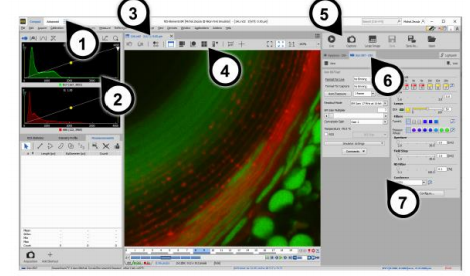
Thu nhận ảnh đơn
B1: Sau khi khởi động phần mềm, chọn live
B2: Trong cửa sổ cài đặt camera: điều chỉnh độ phân giải, chế độ phơi sáng.
Chọn chế độ phơi sáng tự động cho camera: Bấm chọn Auto Exposure, và tùy chỉnh thêm thời
gian phơi sáng phù hợp theo ý muốn ở ô cài đặt phơi sáng thủ công
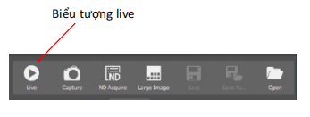
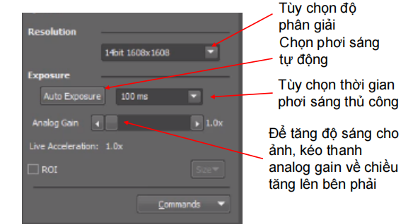
B3: Trên cửa sổ ảnh live, chọn công cụ chỉnh tương phản tự động và chỉnh tỉ lệ
để tự động căn chỉnh tương phản và lấy tỉ lệ cho ảnh
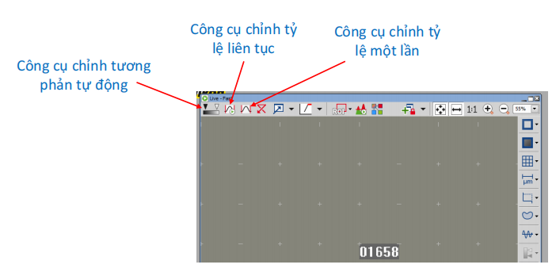
B4: Chụp ảnh, click vào biểu tượng
capture trên màn hình
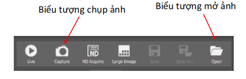
Ngoài ra: trên thanh công cụ, có 2 chế
độ chụp
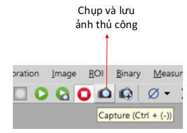
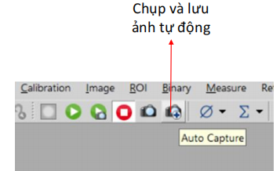
Thu nhận ND
Defile/Run Experiment : mở bảng View > Acquisition Controls > ND Acquisition
Capture Timelapse Automatically : chạy lệnh Acquire > Capture Timelapse > Capture Automatically
Capture Timelapse Manually : chạy lệnh Acquire > Capture Timelapse > Capture Manually
Capture Z-Series Manually : chạy lệnh Acquire > Capture Z – series > Capture Manually
Capture Multichannel Manually : chạy lệnh Acquire > Capture Multichannel > Capture Manually
Capture Large image : chạy lệnh Acquire > Manual large image
Lựa chọn các chế độ
chỉnh tương phản, sắc
nét, nền,…: Kích chọn
công cụ Image -> Chọn
chế độ chỉnh phù hợp
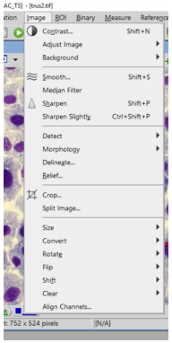
Điều chỉnh độ sáng và màu sắc qua công cụ Look up table LUTs : kích chuột phải ra
ngoài khung ảnh, chọn Visualization Controls -> LUTs -> Sử dụng chuột kéo các
thanh màu (red, green, blue) để điều chỉnh
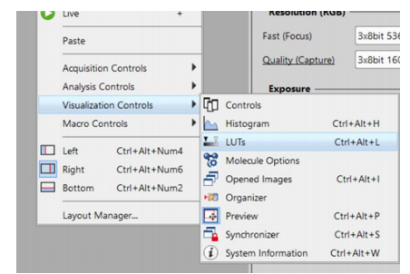
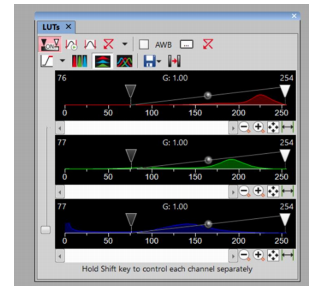
Chèn thước chuẩn (scale bar) vào hình và đo đạt
Lưu ý: Trước khi chèn thước hoặc thực hiện các phép đo , Để thu được độ dài chuẩn cho thanh scale bar cũng
như các phép đo khác, phải chọn đúng loại vật kính được sử dụng để chụp mẫu.
Để mở cửa số lựa chọn vật kính: Chọn biểu tượng Device trên thanh công cụ -> Manual Microscope Pad ->
kích chọn đúng vật kính
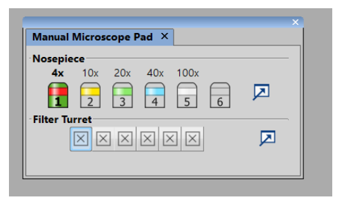
Chèn thước chuẩn (scale bar) vào hình và thiết lập kích thước, độ dày,
màu sắc scale bar với công cụ Scale properties
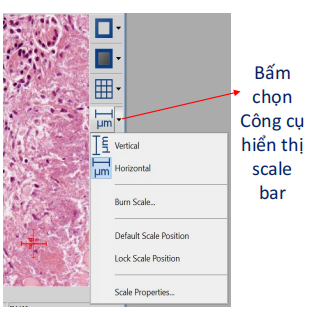
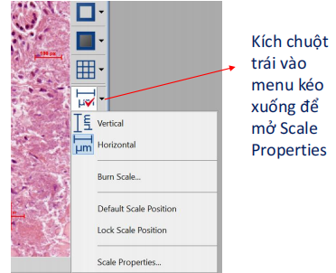
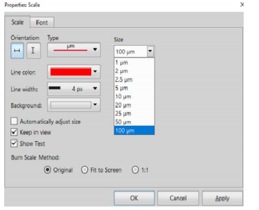
• Đo lường thủ công sử dụng các loại lưới: nhấn nút Graticules.
• Xác định đặc tính lưới: Nhấp phải Graticules và chọn Graticules properties
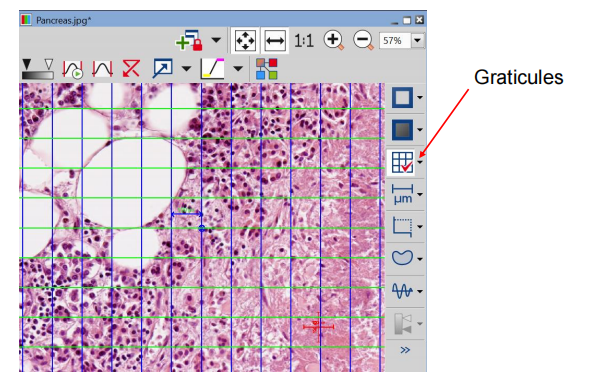
Chú thích và đo lường : thực hiện các phép đo diện tích, độ dài, đếm,
phân loại,…: kích chuột phải ra ngoài khung ảnh, chọn Analysis
Controls -> Annotation and Measurement
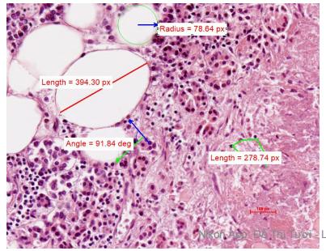
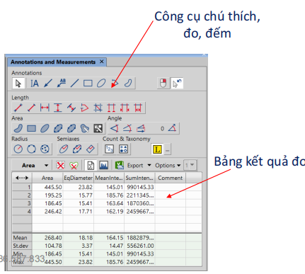
Xuất số liệu đo: Kết quả đo có thể xuất ra báo cáo, excel, máy in,…
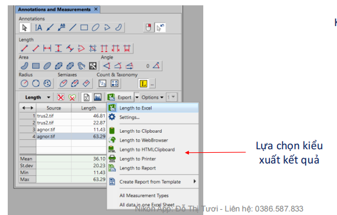
Có thể lựa chọn xuất giới hạn một vài thông số cụ thể thu được từ rất
nhiều phép đo đã thực hiện: Trên menu kéo xuống cạnh nút export, chọn
setting -> data export -> tích chọn các dữ liệu muốn xuất
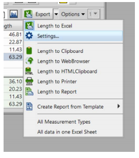
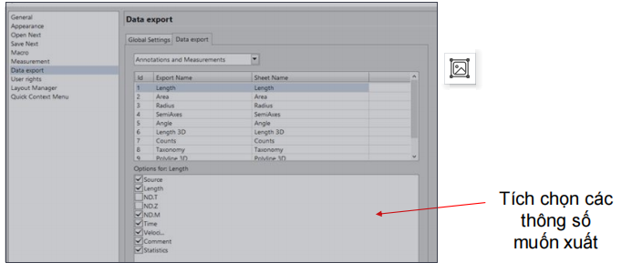
Thu nhận phim AVI
1. Chạy lệnh Acquire > AVI/MP4 Acquisition hiện bảng
điều kiển thu nhận AVI
2. Điều chỉnh các cài đặt nâng cao, đặc biệt là chỉ định tên
và nơi lưu thư mục
3. Nhấn nút Record, ảnh live xuất hiện và bắt đầu ghi theo
các cài đặt.
4. Nhấn Stop để ngừng ghi, hay đợi đến hết thời gian chỉ
định trong trường Duration
5. Khi dừng, tệp AVI vẫn mở trong cửa sổ hình ảnh mới
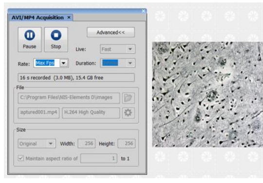
Lưu nhanh bằng công cụ save, save as trên thanh công cụ ở hộp thoại phía bên phải
hoặc lưu, mở, xuất, báo cáo qua “File”
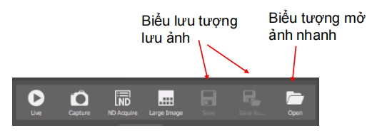
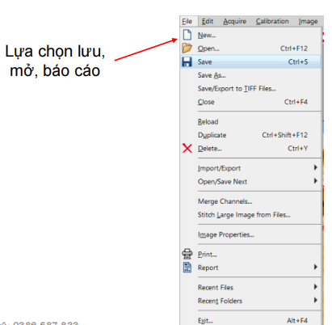
Định dạng hình ảnh: AVI, MP4, JP2 - JPEG2000
ND2, JPG, JFF, JTF, TIFF, TIF, OME.TIF, OME.TIFF
GIF, PNG
Đóng hình ảnh:
• Đóng một ảnh đơn: từ file hình ảnh > lệnh close
• Đóng nhiều ảnh cùng lúc: sử dụng window > Closea all
• Đóng các file đã mở nhưng giữ lại file ảnh gần nhất: window > Closea all
but Current
Tạo báo cáo mới: Report > New blank report
Tạo báo cáo từ mẫu có sẵn: File > Report > New report
from Tempplate
Tạo form mẫu báo cáo: File > Report > New report template
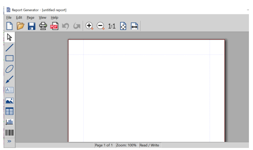
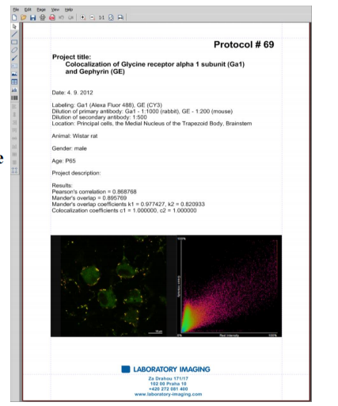
Cách tạo mẫu báo cáo
1. Chạy lệnh File > Report > New Blank Report. Khung báo cáo trống xuất hiện.
2. Trong mục Report Generator, chọn File > Change to Template
3. Chỉnh sửa mẫu báo cáo
4. Chèn dữ liệu động (kết quả đo, hình ảnh …)
5. Chạy lệnh File > Save để lưu mẫu báo cáo (*.rtt)
Cách tạo báo cáo từ mẫu
1. Nếu đã mở sẳn mẫu báo cáo, chạy lệnh File > Create Report. Nếu không, chạy lệnh File
> Report > New Report from Template > Browse để mở mẫu báo cáo từ ổ cứng
2. Mẫu báo cáo mở ra và các dữ liệu động tự động chèn vào
3. Sử dụng các lệnh từ menu File để lưu, in hay xuất các trang thành PDF
Nhấp chuột phải vào vùng nền
(vùng không có ảnh) để truy cập
nhanh 4 tùy chọn điều khiển:
• Acquisition control
• Analysis control
• Visualization control
• Macro control
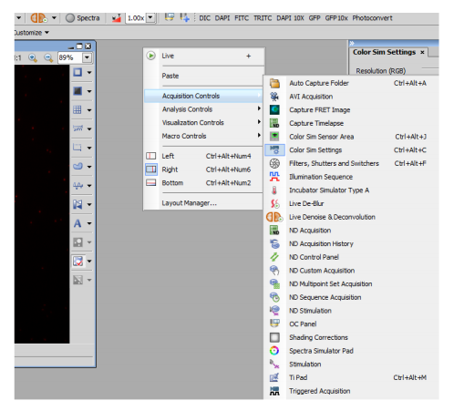